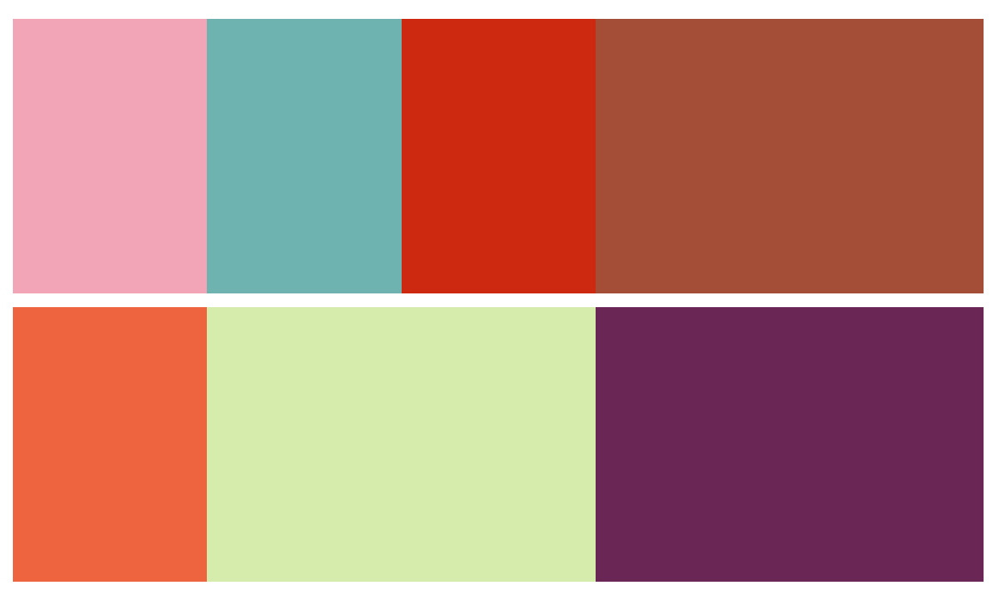

Programming as a coping mechanism
2021
I've been sorting through my dropbox, and one of the folders there is simply called "code". It contains a mildly amusing assortment of tiny tools that helped me cope with mundane tasks by providing a way to constructively procrastinate, and sometimes (almost never) actually save time.
Let's look inside my mostly useless useful toolbox.
Pound Yen continues being boring in this hourly update
Last modified 2010.
My job right out of university was in a TV department of a Forex company. One of our products - or shows - was an hourly summary of currency price fluctuations. Like a 3-minute video with charts in the background and me or my colleagues talking about "pound yen being calm in the so and so timeframe". And we had to record these for all major currency pairs every hour. You'd be right to think one quickly ran out of imagination and different ways of saying the same boring thing.
So I present to you the synonim-suggestion-thingy.
{kind=link}
You roughly know what text you'll want to record. So click the appropriate terms, and get a helpful output with synonyms, which you can re-roll by clicking them. Unless they consist of multiple words. Then syntax error :)
Escaping the graveyard shift with boxes
Last modified 2014.

Recording hourly and 24/5 is a team effort. We worked shifts. And we often argued about who gets what shift. My then teamlead, who was French, would mutter something along the lines of "oooh putane n'est pas possible!" (I don't know French), and claim his freshly made schedule, where he coincidentally gets all the best times, and I'm stuck doing graveyard shift again, is the only possible arrangement.
So, naturally, I decided to make scheduling software. I implemented it by making an HTML page with different color inline-blocks of variable width. They would fall into neat 24h lines and nicely illustrate all possible schedules. Team lead was not amused. Still got graveyard shifts.
Sadly, that code seems lost. So here, have this photo layout generator using very similar boxes and "logic" instead. (Refresh it a couple of times.)
Power bookmarks
Bookmarking Jira, and having to navigate to specific tickets was tedious. Same with support tickets, or users in back-office. So I had a set of "power bookmarks". They'd all be roughly of the form:
https://myorg.jira/browse/PRJ-${show JS prompt, append input here}
Here, try this. Drag the link into your bookmarks bar for all your future HTTP code reference needs.
Reputation monitoring
Last modified 2012.
One bigger assignment was to monitor forums about our industry to gauge how users felt about us. This entailed bookmarking and reading hundreds of threads, analyzing, summarizing, and reporting on what people said.
So, naturally, I made a groovy + grails CRUD app to keep track of all the threads. Later added a sentiment analyzer written in python, so you'd immediately see what was positive or negative. This one was actually used by my teammates. Sadly, don't have time to recompile or run the project. Maybe I'll do it someday to show off screenshots of my awesome creation.
A note on python's awesomeness. It has a huge and extremely usable library ecosystem. I said I made sentiment tracking in python. In reality, all I had to do was something like:
from awesomelib import solution
solution.sentiment(text_from_db)
A canvas
Last modified 2013.

A super simple canvas.html with exactly two features:
- Click and drag to draw.
- Refresh to clear.
YAML toys
Last modified 2015.
At another job, where I managed development of a massively miscarried mobile app, we had to deal with yml translation files - one per language. It was inconvenient as you couldn't see all the translations in one place. So I made myself some tools.
A converter
This CSV <-> YAML converter let's you drag either a CSV file or
multiple
YAML files,
and download the results in the other format. The triggerDownload function is broken. But should be an easy fix for anyone willing.
An editor
{kind=link}
This editor is a slightly more useful version of the converter, as it lets you view and edit the entire dictionary in a nice table, despite the also broken download. It handles missing keys and highlights changed keys.
Try it out with this samle lang-files.zip.
A retrospective
This box of code represents an era, a simpler time. I would program to make the computer solve a problem I had. No outside requirements, tickets, code styles, or VCS. I'd write shitty JS code, copy paste it into a "v2" folder instead of VCS, and send the results to a friend. Anyone with a browser could run my program.
Not knowing or caring about good code, architecture, "better" or faster languages, git, and a lot more - it can be both liberating and productive. Current me would probably never attempt a YAML file editor. I'd instead look for existing solutions, or decide to make my own but get paralyzed choosing tech stack, arch, setting up CI/CD etc.
Sometimes it's nice to forget about doing things the right way, ignore what you've learned over the years, and just lose yourself. Like a child or a puppy carelessly zipping around the park.